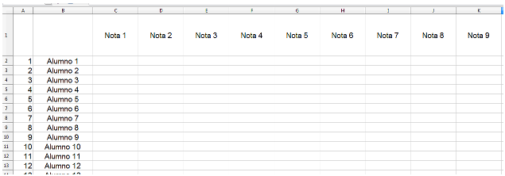
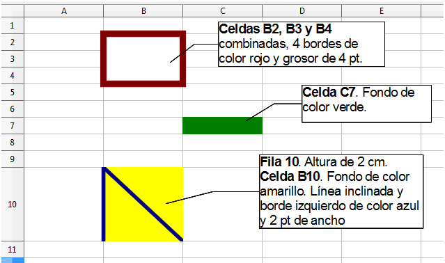
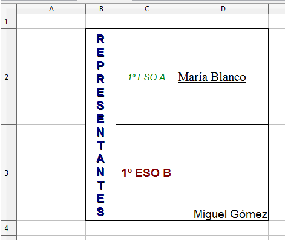
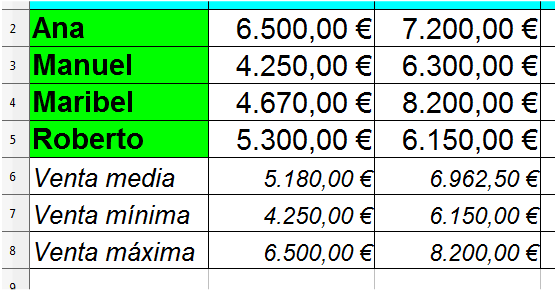
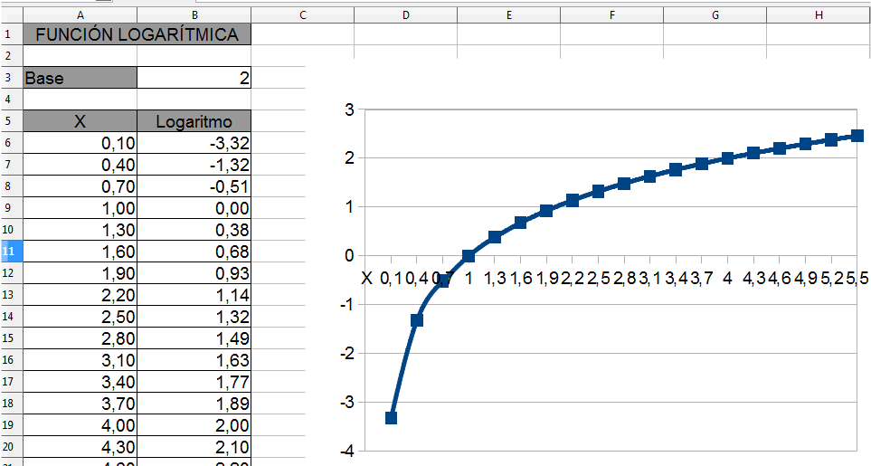
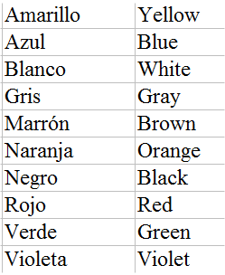

2. Exercicis de Calc¶
Aquesta secció consta de 20 exercicis en què aplicarem diversos continguts tractats en pràctiques guiades.
Creeu a l’ordinador una carpeta amb el vostre nom en què desarem els documents generats.
Índex de contingut:
- Exercici 1: Llista numerada
- Exercici 2: Format de fitxer
- Exercici 3: Format de la cel·la
- Exercici 4: Format de text
- Exercici 5: lloguer de videojocs
- Exercici 6: protegir les cèl·lules
- Exercici 7: superfície dels continents
- Exercici 8: Superfície de l’oceà
- Exercici 9: vendes comercials
- Exercici 10: Servei d’atenció tècnica
- Exercici 11: Funció logarítmica
- Exercici 12: Càlcul de notes
- Exercici 13: colors en anglès
- Exercici 14: imatges, formes i hiperenllaços
- Exercici 15: temperatures
- Exercici 16: Evolució de la població
- Exercici 17: Dades de la comanda
- Exercici 18: dades de filtre
- Exercici 19: Avaluació
- Exercici 20: Format condicional
- Crèdits
Exercici 1: Llista numerada¶
En un nou fitxer Calc, crea des de la cel·la ** B2 ** una llista vertical de 100 estudiants amb el format 1 de l'estudiant, Student 2, ... Student 100. Numera els estudiants de la columna A. de la cel·la ** C1 ** Creeu una llista horitzontal de 20 notes amb el format Nota 1, Nota 2, ... Nota 20.
Doneu a la columna ** A ** una amplada d'1 cm i alineeu el seu contingut a la dreta.
Doneu a la columna ** B ** una amplada de 3cm i centra el seu contingut.
Doneu a la ** fila 1 ** una alçada de 2cm i centra el seu contingut horitzontalment i verticalment.
Deseu el fitxer resultant com a ** "Exercici_01_nombrerealumno.ods " **.
Nota
Recordeu que ODS és l’abast del fitxer predeterminat, no cal que l’escrigui perquè Calc l’afegeix automàticament.

Exercici 2: Format de fitxer¶
Obriu el full de càlcul de l'exercici anterior ** "Exercici_01_NAMES.
** Exercici_02_namenalumno.xls ** (format MS Excel 2003)
** Exercici_02_name.xlsx ** (format MS Excel 2007)
Exercici 3: Format de la cel·la¶
En un nou fitxer calc, doneu a les cel·les indicat el format que observeu a la imatge.
Mantingueu el fitxer resultant com a ** "Exercici_03_NOMBREALUMNO.ODS " **.

Exercici 4: Format de text¶
En un nou full de càlcul modifica el format de les cel·les i el text que hi ha inclosos tal com s’indica a continuació, per obtenir un resultat igual al de la imatge.
Files 2 i 3: 3cm d'alçada.
Amplada de la columna: b = 1cm, c = 2cm i d = 3cm.
Les cèl·lules B2 i B3 combinades, amb un text horitzontal i centrat verticalment disposats en vertical. Format de text Arial mida 10 punts, negreta, ombra i color blau.
Text de la cel·la ** C2 ** Centrada, Font Arial, Mida 8 Punts, Estil italic i color verd.
Text de la cel·la ** D2 ** alineat a l'esquerra, Fuente Times New Roman, de mida 11, subratllada.
Text de la ** cel·la C3 ** Centrada, Fonta Arial, mida de 10 punts, color vermell atrevit i fosc.
Text de la cel·la ** D3 ** alineat horitzontalment a la dreta i verticalment a sota.
Deseu el fitxer resultant com a ** "Exercici_04_nombrerealumno.ods " **.

Exercici 5: lloguer de videojocs¶
Imagineu -vos que heu de crear un full de càlcul per a un lloguer de videojocs. El model és el que podeu veure a la imatge següent.
Quan s’introdueixen les dates de lloguer i de devolució, el full ha de calcular els dies del préstec i l’import a recollir.
El preu diari normal s'aplicarà quan la durada del préstec sigui igual o inferior a 7 dies. Durant més dies, s’aplicarà l’altre preu.
Donarem a cada cel·la el format adequat (moneda, data o número).
Proveu el funcionament del full introduint diferents dates i preus diaris.
Deseu el fitxer resultant com a ** "Exercici_05_nombrerealumno.ods " **.

Exercici 6: protegir les cèl·lules¶
Obriu el fitxer que heu creat a la pràctica anterior i protegiu totes les cel·les, excepte les cel·les ** B1 ** i ** B2 ** (en què s’introdueixen les dates de lloguer i devolució) amb la contrasenya ** 12345 **.
Deseu el fitxer resultant com a ** "Exercici_06_NOMBREALUMNO.ODS " **.
Exercici 7: superfície dels continents¶
Creeu un full de càlcul nou. Canvieu el nom del primer full com a ** "continents " **. Introduïu un gràfic de columnes de les dades següents:

Doneu a les cel·les i al text el format que vulgueu.
Deseu el fitxer resultant com a ** "Exercici_07_nombrerealumno.ods " **.
Exercici 8: Superfície de l’oceà¶
Obriu el fitxer de l'exercici anterior. Introduïu un nou full anomenat ** "Oceans " ** i inseriu un gràfic de pastissos (cercles) de les dades següents:

Mantingueu el fitxer resultant com a ** "Exercici_08_NOMBREALUMNO.ODS " ** protegit amb la contrasenya d'obertura ** 12345 **.
Exercici 9: vendes comercials¶
Utilitzant la cola especial "Special " Copieu tot el contingut del document de text Exercici_09.odt <../_ Static/Tutorial-Calc/Calc/CAS/Practic/Store/Exercici_09.ODT> `__ en un nou full de càlcul. Doneu a les cel·les i al text el format que apareix a la imatge. Obteniu la suma de les vendes anuals de cada comercial i obteniu els valors de vendes "mitjà ", "màxim " i "mínim " de cada mes.
Deseu el fitxer resultant com a ** "Exercici_09_NOMBREALUMNO.ODS " **.

Exercici 10: Servei d’atenció tècnica¶
En un nou full de càlcul introdueix dades com la imatge i un tipus de lletra (utilitzeu els dissenys que vulgueu). Feu que Cal obtenir la quantitat total que serà la suma de les hores de servei pel seu preu més el preu del KM per la seva quantitat. El cost de Km tindrà dos valors, un per a distàncies superiors a 10 km i un per als inferiors.
Un cop dissenyat el full, introduïu dades per provar el seu funcionament.
Deseu el fitxer resultant com a ** "Exercici_10_namer.ods " **.

Exercici 11: Funció logarítmica¶
A partir de la imatge, creeu un full que proporcioni els resultats i el gràfic d’una funció logarítmica basada per l’usuari. Personalitzeu el format de les taules i el gràfic.
Deseu el fitxer resultant com a ** "Exercici_11_nombrerealumno.ods " **.

Exercici 12: Càlcul de notes¶
En un nou full de càlcul introdueix dades similars a les de la imatge (utilitzeu el format que vulgueu). Introduïu els pesos següents a les notes:
- Tema 1: 20%
- Tema 2: 20%
- Tema 3: 30%
- Treball: 30%
Feu que el Calc generi automàticament les notes (d’1 a 10) i calculeu el grau final sense decimals.
Deseu el fitxer resultant com a ** "Exercici_12_nombrerealumno.ods " **.

Exercici 13: colors en anglès¶
Basat en la pràctica guiada número 23 dissenya un full de càlcul en què l’usuari ha d’introduir un dels colors de la llista i CALC proporcionarà el vostre nom en anglès.
Deseu el fitxer resultant com a ** "Exercici_13_nombrerealumno.ods " **.

Exercici 14: imatges, formes i hiperenllaços¶
En un nou full de càlcul introdueix:
- El vostre nom i cognom en un ** "fontwork " **.
- La imatge Exercici_14.jpg.
- Una forma ** **, la que vulgueu, de la barra d’eines de dibuix.
Gireu la imatge de 45º i poseu -la al fons.
En la forma crea un ** hiperlace ** a la definició de ** "teclat " ** a Wikipedia.
Mantingueu el fitxer resultant com a ** "Exercici_14_nombrerealumno.ods " **.
Exercici 15: temperatures¶
Sabent això:
- Per passar de ºC a ºF, heu de multiplicar per 9, dividir -vos per 5 i després afegir 32.
- Per passar de ºF a ºC, heu de restar 32, després multiplicar -vos per 5 i al final es divideix per 9.
Creeu un full de càlcul en què l'usuari introdueixi graus Celsius i Calc proporciona els graus de Farenheit i viceversa.
Deseu el fitxer resultant com a ** "Exercici_15_nombrerealumno.ods " **.
Exercici 16: Evolució de la població¶
Copieu i enganxeu les dades contingudes al document Exercici_16.odt en un nou fitxer de Calc mitjançant el "Special Stuck ".
Inseriu un gràfic (trieu el que considereu més adequat) i personalitzeu -lo posant fons, format de text, etc.
Deseu el fitxer resultant com a ** "Exercici_16_NOMBREALUMNO.ODS " **.
Exercici 17: Dades de la comanda¶
Obriu el Exercici_17.ods Contenint quatre fulls. Copieu i enganxeu la llista d’estudiants i notes del primer full als altres tres fulls i ordeneu com segueixen aquestes dades:
- "Full alfabètic ": ordre alfabètic ** ascending **.
- Full "Mate ": Ordre ** Ascending ** per la nota de matemàtiques.
- Full "Física ": Ordre ** Descendir ** Primer per la nota de física i segon per la nota de ciències.
- Full "Ciències ": Ordre ** Ascendent ** Primer per la nota de ciència, segona per la física i la tercera nota de la nota de matemàtiques.
Deseu el fitxer resultant com a ** "Exercici_17_nombrerealumno.ods " **.
Exercici 18: dades de filtre¶
Obriu el Exercici_18.ods.
Imagineu -vos que conté dades dels usuaris d’una xarxa social. Utilitzeu el filtre per respondre a la informació sol·licitada en problemes de les tres primeres files.
Un cop contestades els problemes, mantingueu el fitxer resultant com ** "Exercici_18_nombrerealumno.ods " **.
Exercici 19: Avaluació¶
Obriu el fitxer que heu creat a l'exercici 12. Després de la columna de "Nota final " afegeix la columna ** "Avaluació " ** en la qual cal posar Calc, depenent del valor de la "Nota final ":
- "Insuficient " Si la nota és inferior a 5.
- "Prou " Si la nota és igual o superior a 5 i inferior a 6.
- "Bo " Si la nota és igual o superior a 6 i menys de 7.
- "Notable " si la nota és igual o superior a 7 i inferior a 9.
- "Pendent " Si la nota és igual o superior a 9.
Premeu la combinació Kift+Ctrl+F9 per provar el funcionament del full de càlcul.
Deseu el fitxer resultant com a ** "Exercici_19_namer.ods " **.
Exercici 20: Format condicional¶
Obriu el fitxer generat a l’exercici anterior i creeu cinc nous estils de cèl·lules: insuficients, suficients, bons, notables i destacats. Cada estil tindrà un format de cel·la (vores, color, etc.) i text (font, mida, etc.) que no sigui la resta.
L'ús del format condicional aplica els nous estils a les cel·les de la columna "Avaluació ". Premeu la combinació Kift+Ctrl+F9 per provar el funcionament del full de càlcul.
Deseu el fitxer resultant com a ** "Exercici_20_namerumno.ods " **.
Crèdits¶
Autor dels exercicis originals: José Manuel Blanco Guimarey
Llicència: `Creative Commons By-NC-S
Font: Exercicis proposats
Crèdits tutorials: Crèdits